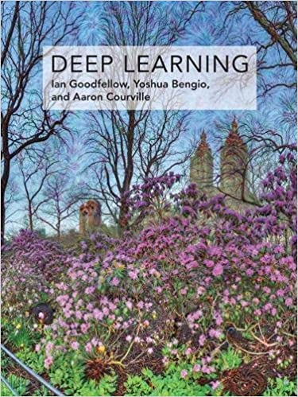

| Week | Topics | Homework |
|---|---|---|
| Week 1 | Overview | |
| Week 2 | No class, Artificial intelligence | |
| Week 3 | ML hardware | HW1 |
| Week 4 | Machine learning | |
| Week 5 | KNN | |
| Week 6 | Exam 1 | HW2 |
| Week 7 | Linear Regression | |
| Week 8 | Logistic Regression | |
| Week 9 | No class, Spring break | |
| Week 10 | Feedforward neural network | |
| Week 11 | Exam 2 | HW3 |
| Week 12 | CNN | |
| Week 13 | RNN | |
| Week 14 | Resarch paper presentation | |
| Week 15 | Resarch paper presentation | |
| Week 16 | Resarch paper presentation | |
| Week 17 | Final exam |

Deep Learning
Ian Goodfellow and Yoshua Bengio and Aaron Courville
ISBN-13: 978-0262035613
ISBN-10: 0262035618